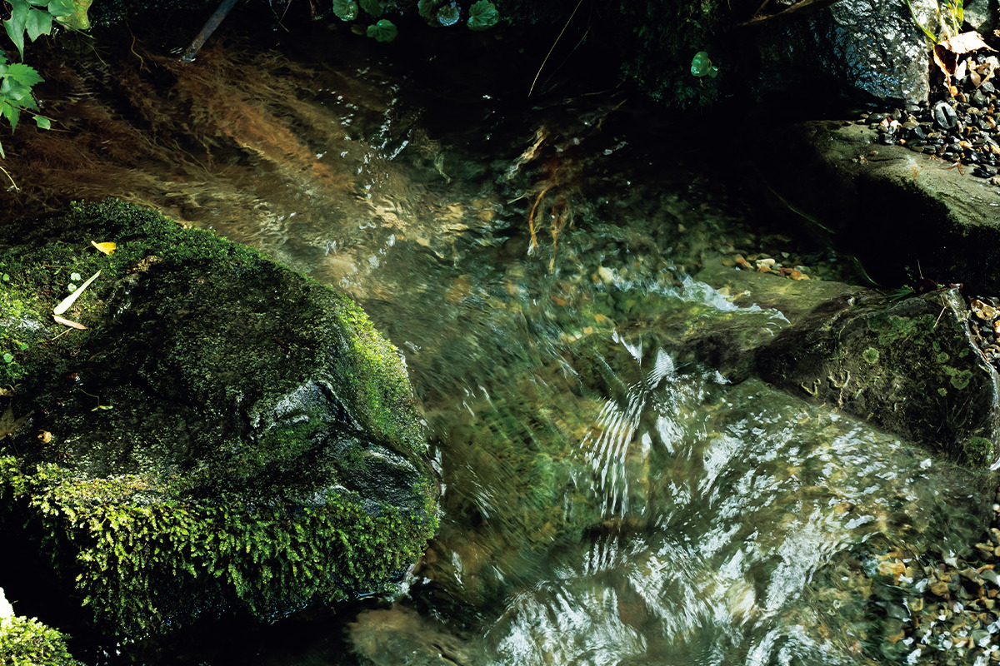
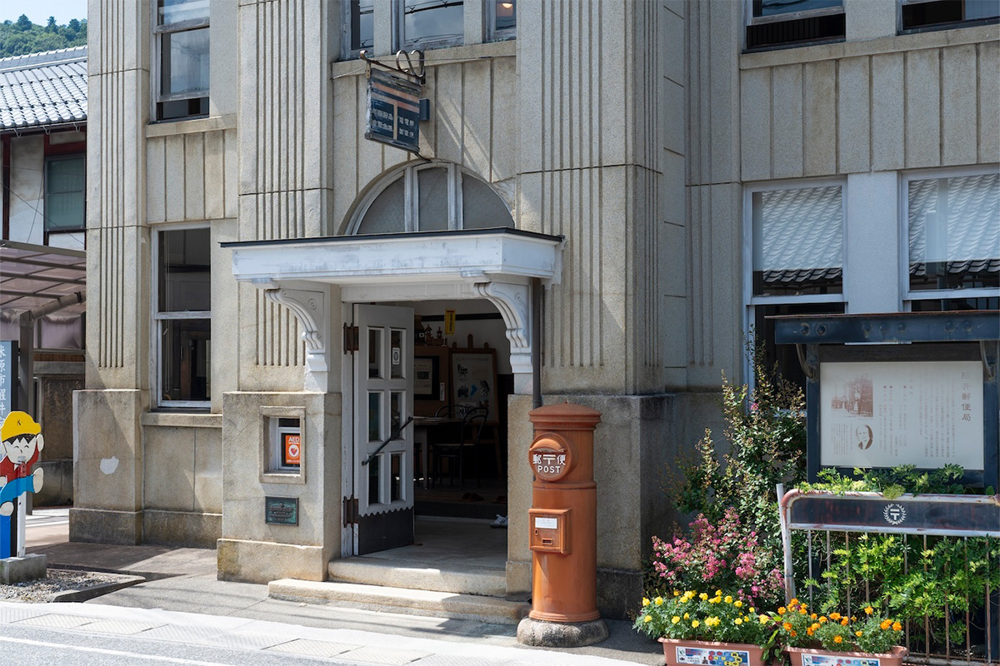
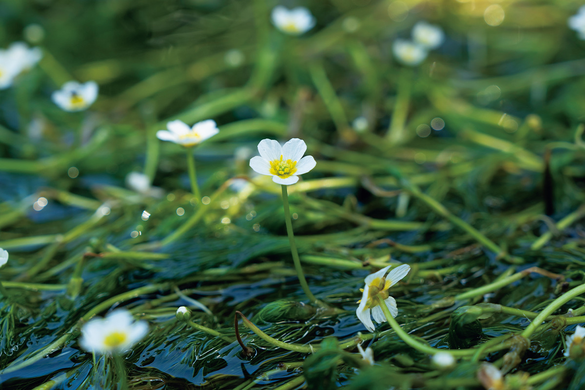
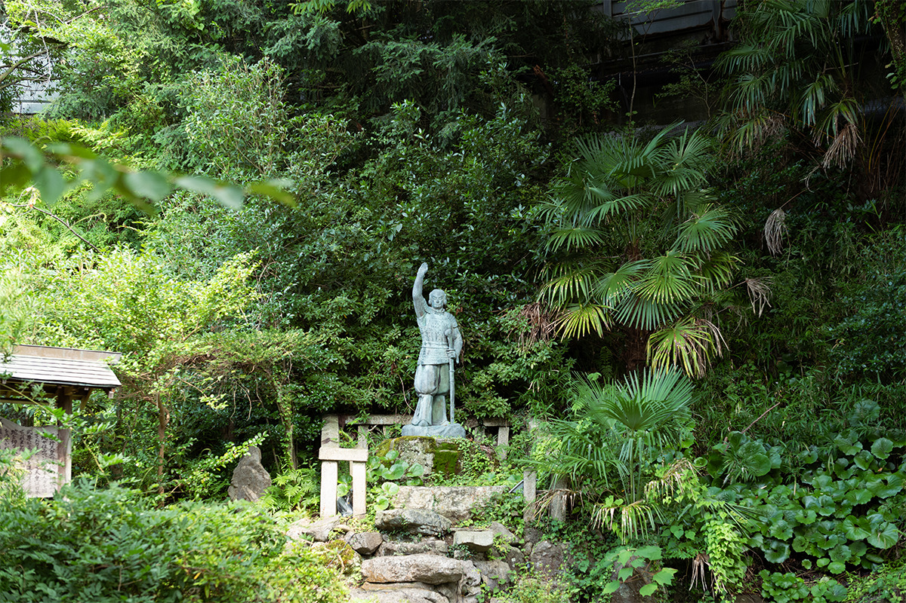
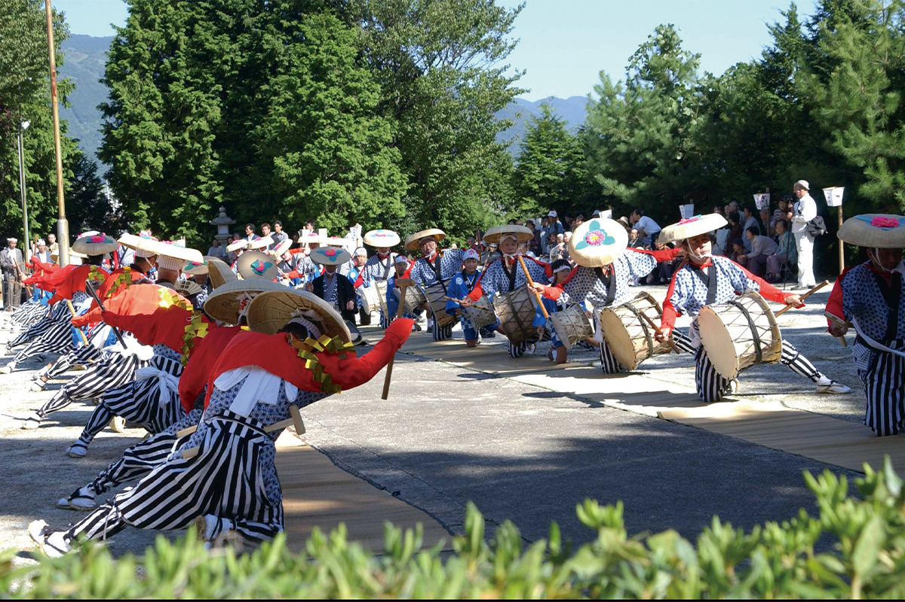

Префектура Сига · Майбара · прогулка
Самэгаи: почтовая станция, где везде слышна вода

Путешествие по северному берегу озера Бива удобно закончить в Самэгаи, старой почтовой станции в городе Майбара. Родники, чистая речка и тихие улицы сохранили здесь облик деревни у воды, какой в Японии почти не осталось.
Станция
Деревня у воды на тракте Накасэндо
Самэгаи была шестьдесят первой из 69 станций тракта Накасэндо, по которому в эпоху Эдо ходили из Эдо в Киото через горы. Её питает вода с горы Рёдзэн, самой северной вершины хребта Судзука: подземные родники выходят здесь на поверхность и собираются в речку Дзидзо. Вдоль речки идёт старая дорога, и дома на ней до сих пор хранят дух эпохи Эдо.

Самые известные родники станции называют «тремя водами Самэгаи». Кроме «Исамэ-но симидзу» это «Дзюосуй», который, по преданию, открыл монах школы Тэндай в эпоху Хэйан, и «Сайгёсуй», связанный с легендой о поэте-монахе Сайгё (1118–1190), много странствовавшем по Японии.
Архитектура
Почта Уильяма Меррелла Вориза
Первая остановка в Самэгаи это бывшее здание почты. Изящный дом в западном стиле построил Уильям Меррелл Вориз (1880–1964), американский архитектор, который жил в Оми-Хатимане и оставил в Японии много зданий. Сегодня в бывшей почте работает краеведческий музей станции, где рассказывают историю городка. Вход для взрослых стоил 200 иен в 2024 году.

Музей станции Самэгаи (бывшая почта Самэгаи)
- Адрес
- префектура Сига, Майбара, Самэгаи, 592
- Телефон
- +81 749-54-2163
- Часы работы
- 9:00–17:00 (вход до 16:30)
- Выходные
- понедельник (если это праздник, то следующий день)
- Цены / Вход
- взрослые 200 иен, школьники 100 иен
Прогулка
Вдоль речки Дзидзо
От почты стоит пройтись вдоль речки. В воде колышется байкамо, водное растение, которое растёт только в очень чистой пресной воде. В речке охлаждают арбузы, а дети с брызгами играют на мелководье.

«В Самэгаи шум воды слышен отовсюду. Смотрите на неё, слушайте, трогайте руками: здесь хорошо всеми пятью чувствами»
сотрудник отдела охраны культурного наследия при городском комитете образования Майбары
Легенда
Родник, который исцелил Ямато Такэру
Прогулку стоит закончить у истока, у родника «Исамэ-но симидзу». С ним связан миф о Ямато Такэру, легендарном принце и герое древних японских сказаний. Он бился с божеством горы Ибуки, принявшим чужой облик, был ранен и, по преданию, залечил раны именно этой водой. Прикоснуться к ней приходят и сегодня, чтобы набраться сил перед дорогой.

Праздник
Танец с барабанами ради дождя
В районе Асахи, тоже в Майбаре, с давних времён молятся богу воды и посвящают ему танец, призывающий дождь. Обряд называется «Асахи хонэн тайко одори»: танцоры бьют в барабаны и танцуют во дворе святилища Хатиман. Это единственное в городе народное искусство, которое государство включило в список нематериального наследия, отобранного для записи и сохранения.

В 2024 году танец исполняли 6 октября.
«Асахи хонэн тайко одори»
- Адрес
- префектура Сига, Майбара, Асахи, 1472, святилище Хатиман
- Телефон
- +81 749-51-9082 (организация по туризму «Бивако но мото»)
- Даты
- 6 октября 2024 года (по оригиналу), даты других лет уточняйте
Фото: Садахо Найто, Роберт Иппэй.